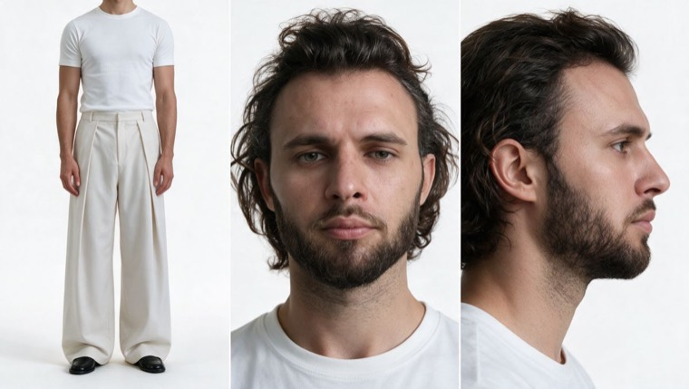
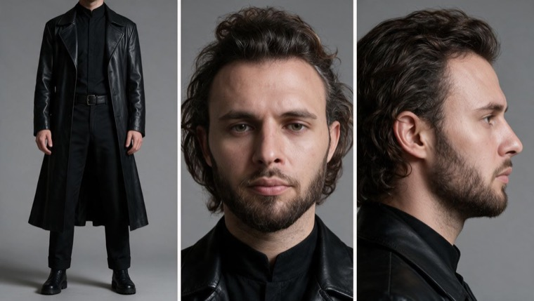
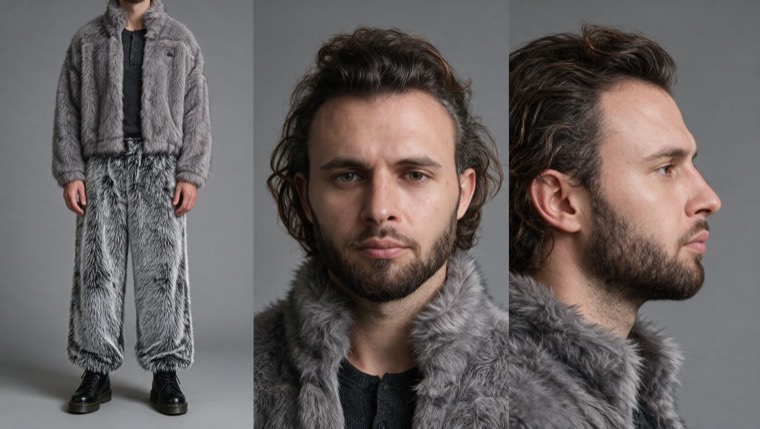
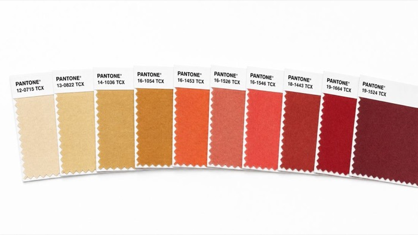
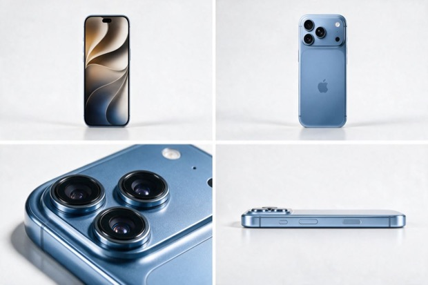
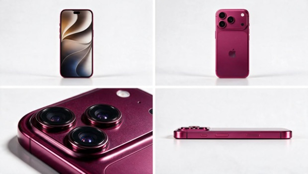
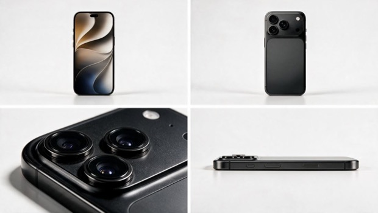
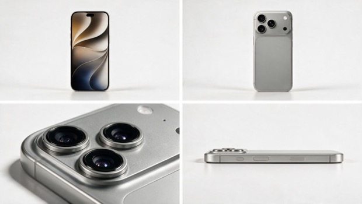

5 луков
за 11 секунд
Один непрерывный кадр на белой циклораме. Герой держит позу почти неподвижно, между луками — оборот вокруг себя, на котором весь кадр падает в чистое чёрно-белое. За спиной гигантский телефон, внизу веер цветовых карточек. Всё меняется внутри оборота.
Между луками — переходы. Это единственное быстрое движение в ролике, и цвета в них нет вообще.
Порядок загрузки задаёт номера тегов. Сдвинешь хоть один файл — промпт начнёт ссылаться не на тот ассет: герой окажется телефоном, а веер курткой.

@image10Белый — мастер личности

@image6Кожаный плащ

@image7Серый мех

@image5Веер карточек

@image1Голубой

@image2Маджента

@image3Чёрный

@image4Титановый серый
Промпт целиком
Финальная версия под всю сцену: десять референсов, пять луков, четыре перехода. Двадцать тысяч знаков, из которых половина — негативы. Именно они держат телефон прямым, а переход честно чёрно-белым.
INPUT ROLES — TEN REFERENCES, EACH WITH A STRICT SCOPE: @image10 — LOOK 1, THE INTRO, AND THE IDENTITY MASTER. The man's face, hair and body come from here and are the identity for the WHOLE film: a man around thirty, European, lean and tall, fair skin, mid-length dark brown wavy hair pushed back off the forehead and falling to the neck, a full dark beard and moustache, straight strong nose, green-hazel eyes, no make-up. LOOK 1 WARDROBE: a fitted plain white crew-neck cotton tee tucked in, cream off-white wide-leg pleated tailored trousers breaking long over the shoe, black leather square-toe loafers. Take the person and this outfit; take NOTHING of the sheet layout, the panel divisions or the studio lighting. @image6 — LOOK 2 WARDROBE, same man: a LONG BLACK LEATHER TRENCH COAT worn open, notch lapels, falling below the knee; a black mandarin-collar shirt buttoned to the throat; a black leather belt with a square metal buckle; straight black trousers; black leather boots. Clothes only; his face, hair and beard stay as in @image10. @image3 — THE DEVICE FOR LOOK 2, IN DEEP MATTE BLACK. THIS IS A HARDWARE REFERENCE: the giant phone behind him IS THIS EXACT DEVICE, scaled up to human height. Take its silhouette, proportions, rounded corners, metal side frame with button reliefs and antenna lines, raised square camera plateau with three circular lenses, flash and microphone dot, its emblem and its finish EXACTLY as photographed here. Take nothing of the four-panel layout or the white sweep. @image9 — LOOK 3 WARDROBE, same man: an oversized DEEP NAVY HEAVY-FLEECE HOODIE with a kangaroo pocket and ribbed cuffs and hem; matching deep navy fleece sweatpants with a drawcord and elasticated ankles; a thin white tee showing at the hem; white leather low-top sneakers; a silver chain bracelet on one wrist and a steel watch with a blue dial on the other. Clothes only. @image1 — THE DEVICE FOR LOOK 3, IN CLEAN LIGHT STEEL-BLUE. Same hardware reference role as @image3. @image7 — LOOK 4 WARDROBE, same man: a GREY FAUX-FUR JACKET with a wide fur collar and long fur pile, worn open; a charcoal ribbed henley beneath, buttoned partway; matching GREY FAUX-FUR WIDE TROUSERS with a darker streaked pile; a metal buckle belt; black chunky lace-up boots with yellow welt stitching. Clothes only. @image4 — THE DEVICE FOR LOOK 4, IN NATURAL SILVER-GREY TITANIUM. Same hardware reference role. @image8 — LOOK 5 WARDROBE, same man: a BURGUNDY-PLUM TAILORED SUIT — a cropped structured jacket with wide peak lapels and one button at the waist, and matching pleated straight trousers with a turned cuff — over a burgundy silk shirt open at the collar; black polished leather derbies. Clothes only. @image2 — THE DEVICE FOR LOOK 5, IN VIVID METALLIC MAGENTA-RASPBERRY. Same hardware reference role. @image5 — THE SWATCH FAN, AS A CONSTRUCTION EXAMPLE ONLY. Take from it exactly how the cards are BUILT and SPREAD: square cards, a white label band along the top edge of each, a fabric colour field with a fine pinked zigzag edge, laid out flat and low in a wide overlapping fan like a dealt hand. THIS IMAGE IS ONLY AN EXAMPLE OF THE SHAPE AND LAYOUT — ITS COLOURS ARE NOT USED. In the film the colours of the fan are DIFFERENT IN EVERY LOOK and are set by the colour logic below, and every individual card within the fan carries ITS OWN DISTINCT SHADE. Take no colour, no crop and no lighting from this image. FROM EVERY REFERENCE TAKE ONLY THE PERSON, THE DEVICE OR THE CARD CONSTRUCTION — never the sheet layout, never the panel splits, never the studio lighting, never the backdrop. THE FACE IS THE SAME IN ALL FIVE LOOKS, taken from @image10: identity locked, same beard length, same hairline, no drift, no ageing, no change of hairstyle. THE ATTACHED VIDEO @video1 IS THE MASTER MOTION AND TIMING REFERENCE. Take from it: the locked-off full-length framing on a white cyclorama, the subject's constant position and scale, the swatch fan along the bottom edge, THE FULL-REVOLUTION SPIN TRANSITION WITH THE ENTIRE FRAME DROPPING TO BLACK AND WHITE DURING THE SPIN AND COLOUR SNAPPING BACK ON THE WAY OUT, the rhythm of roughly two seconds per look, the opening beat where the figure stands with his back to camera before revealing, and THE PERFORMANCE ENERGY — the heavy slow-motion deceleration into an almost motionless hold. TAKE NOTHING ELSE: not the person, not the face, not the hair, not any of the outfits, not the colour palette. FORMAT: ONE SINGLE CONTINUOUS TAKE, 11 seconds, NO CUTS. ASPECT RATIO 9:16 vertical. NO MUSIC ANYWHERE — real recorded sound only. THE SHOT — LOCKED OFF: a full-length wide shot on a seamless pure-white studio cyclorama, lens at chest height, level horizon, dead-centre symmetrical. THE CAMERA NEVER MOVES for the entire 11 seconds. He stays on the same mark at the same scale in every look, feet on the white floor with a soft contact shadow, always fully inside frame from the top of his head to his shoes. HIS PERFORMANCE — GLAMBOT SLOW MOTION, ALMOST MOTIONLESS: Shot and played like an awards-show glambot: everything he does is in HEAVY SLOW MOTION with real high-speed-camera weight. Out of each spin he DECELERATES SMOOTHLY INTO HIS POSE and comes almost completely to rest, and then HE BARELY MOVES AT ALL for the rest of the look — no second pose, no gesture, no repositioning. The only things still alive in the hold are the slow trailing settle of his hair and fabric, a slow blink, and the faintest continuing drift of his weight. He is deliberately, luxuriously still. The stillness is the point. ONE POSE PER LOOK, LANDED SLOWLY AND HELD. The spin is the only fast movement in the film, and even the spin carries slow-motion weight and inertia rather than snapping. THE POSES ARE FIXED AND MUST NOT BE SWAPPED — one per look, no others: LOOK 1, THE LINE: standing tall and open, one hand slid loosely into the front trouser pocket with the thumb outside, the other arm lifted so the hand rests flat against the waistband at the front, elbow held clear of the body, weight settled on one leg with the other foot turned slightly out so the wide trouser leg falls in a long clean line, chin lifted, gaze straight into the lens. LOOK 2, THE COAT: both hands gripping the open front edges of the leather coat at chest height and holding them slightly apart so the coat hangs wide and heavy, feet planted apart, shoulders squared, chin level, a cool unblinking stare into the lens. LOOK 3, THE TURN: a three-quarter turn away from camera, both hands pushed into the hoodie's kangaroo pocket so the fleece pulls tight across the back, one hip pushed back, shoulders rounded forward, looking back over his shoulder into the lens. LOOK 4, TEXTURE: one hand gripping the fur collar and pulling it across his chest, the other set on the belt at his hip, one boot pushed forward, head tipped down with his eyes coming up to the lens. LOOK 5, THE BUTTON: a slight turn off-axis, one hand at the single button of the cropped jacket as if just fastening it, the other hand in the trouser pocket, one shoulder dropped back, head tilted a fraction, a small closed-mouth smile, eyes into the lens. No pose is ever repeated; no two looks share the same arms, hips and head angle. He never stands with his arms hanging limp. THE TRANSITIONS — THE FRAME MUST GO FULLY BLACK AND WHITE, THIS IS A PRIORITY FIX: At each transition HE SPINS one full revolution on the spot. AT THE EXACT FRAME THE SPIN BEGINS, THE ENTIRE IMAGE BECOMES PURE MONOCHROME — one hundred percent desaturated, true black and white, ZERO colour anywhere: his skin, his hair, his clothes, the giant phone, the swatch fan, the floor, everything. It is an instant hard flip to greyscale, not a fade, not a ramp, not a partial wash, not a tint, not a cool grade — the colour is simply gone. THE WHOLE SPIN PLAYS OUT IN BLACK AND WHITE. During it the phone slides up and out through the top of frame while the next rises in from below, and the swatch cards reshuffle. AT THE EXACT FRAME THE SPIN ENDS, FULL COLOUR SNAPS BACK instantly, and he is already in the next outfit, decelerating into the new pose. Again an instant hard flip, never a fade. Every single transition works this way, all four of them, identically. The clothes change entirely inside the monochrome spin — never a dissolve, never a morph, never a fade, never a half-changed outfit. THE BACKGROUND — EXACTLY ONE GIANT SMARTPHONE AT A TIME: Behind him stands ONE enormous smartphone and only one. It is THE SAME DEVICE AS IN THE HARDWARE REFERENCE FOR THAT LOOK, enlarged to human height: a real phone with real metal and real glass, its BACK PANEL turned to camera, standing PERFECTLY UPRIGHT and DEAD CENTRE of frame, its whole body visible from top to bottom, tall enough to stand behind him from above his head down to below his knees. A real device — not a slab, not a card, not a poster, not a panel, not a tablet, not a screen. IT MUST CARRY THE DEVICE'S REAL FEATURES exactly as in the reference: the RAISED SQUARE CAMERA PLATEAU in its upper-left corner, with THREE clearly separate CIRCULAR LENSES in a triangle inside it — each with dark glass, a visible inner barrel and a slim polished metal ring — plus one small round flash and a tiny microphone dot; the polished metal SIDE FRAME with its flat chamfer, thin antenna lines and button reliefs; and the fine brushed metallic finish of the back panel with one soft highlight rolling across it. THE CAMERA PLATEAU AND ALL THREE LENSES STAY FULLY VISIBLE AND UNOBSTRUCTED above and beside him at all times. IT FACES THE CAMERA SQUARE AND STANDS STRAIGHT: parallel to the camera sensor, ZERO tilt into depth, ZERO foreshortening, ZERO rotation — perfectly vertical and level, its edges parallel to the edges of frame. No lean, no wedge shape, no trapezoid, no narrowing toward one end, no compression, no stretch, no bending. It stands clearly BEHIND him, never in front, never touching him. THE VERTICAL SLIDE: each new phone RISES INTO FRAME FROM BELOW THE BOTTOM EDGE, sliding smoothly straight up until fully in view and centred behind him, decelerating into place; it then HOLDS COMPLETELY STILL for the whole of his hold; on the spin it SLIDES ON UPWARD and out through the top edge while the next is already rising in from below, so the frame is never without a phone. Always straight vertical motion, always upward, never downward, never sideways, never diagonal, never tumbling or rotating. THE SWATCH FAN ALONG THE BOTTOM: built exactly as in @image5 — square cards with a blank white label band along the top edge and a fabric colour field with a fine pinked zigzag edge, spread flat and low in a wide overlapping fan across the full width of frame, cropped by the bottom edge, taking up only the bottom strip. Present in EVERY frame, never empty. EVERY CARD IN THE FAN IS A DIFFERENT SHADE, running as a graded sequence from palest to deepest within that look's colour family. On each transition the cards reshuffle in monochrome and settle flat again in the new family as the new phone lands. Never a rosette, never a pleated paper fan, never standing on end. COLOUR LOGIC: HIS OUTFIT, THE GIANT PHONE AND THE SWATCH FAN ARE ALWAYS THE SAME COLOUR FAMILY, though not the same exact tone — the fan bridges the two. Black with black. In LOOK 3 the whole blue family is in play at once: the deep navy fleece on him, the light steel-blue device behind him, and the fan running the full graded ladder between them. Silver-grey with silver-grey. In LOOK 5 the whole magenta-to-burgundy family is in play: the burgundy-plum suit on him, the vivid magenta-raspberry device behind him, and the fan running the full graded ladder between them. The garments keep their own true colour exactly as in their wardrobe reference and are never repainted to match the device. The white cyclorama and his skin are the only neutrals in frame. OPENING BEAT — 0.0–0.6s: he stands with HIS BACK TO CAMERA, head slightly lowered, only the white tee, the cream wide-leg trousers and his dark hair readable, the first phone already rising into place behind him. At 0.6s he turns slowly to face front and decelerates into the Look 1 pose. LOOK 1 — 0.6–2.2s | THE COLOUR STORM. The white tee and cream tailoring from @image10, held almost motionless in the line pose. The giant phone behind him CYCLES RAPIDLY THROUGH EVERY COLOUR — green, orange, purple, yellow, silver, pink, teal, black, one after another every few frames, never settling — and the fan below flickers through the same riot, each card a different hue. The device never changes shape while its colour changes. 2.2s — TRANSITION ONE: the spin, in full black and white, as specified above. LOOK 2 — 2.2–4.4s | BLACK. The long black leather coat and mandarin-collar shirt from @image6 in the coat pose, held. Behind him the deep matte black device from @image3; the fan a graded run of charcoals, graphites and near-blacks, every card different. 4.4s — TRANSITION TWO: the spin, in full black and white. LOOK 3 — 4.4–6.6s | BLUE. The navy fleece hoodie set from @image9 in the turn pose, held, its deep navy unchanged. Behind him the light steel-blue device from @image1; the fan a graded run from pale ice blue through steel and slate down to deep navy, every card different. 6.6s — TRANSITION THREE: the spin, in full black and white. LOOK 4 — 6.6–8.8s | SILVER GREY. The grey faux-fur jacket and fur trousers from @image7 in the texture pose, held. Behind him the natural silver-grey titanium device from @image4; the fan a graded run of pale silvers, warm greys and pewter, every card different. 8.8s — TRANSITION FOUR: the spin, in full black and white. LOOK 5 — 8.8–11.0s | MAGENTA TO BURGUNDY. The burgundy-plum suit and silk shirt from @image8 in the button pose, held, its burgundy unchanged. Behind him the vivid magenta-raspberry device from @image2; the fan a graded run from bright magenta through raspberry and wine down to deep plum, every card different. The shot ends on the held pose with the phone standing centred behind him. PHYSICS — SLOW AND HEAVY: HAIR: on every spin his mid-length wavy hair lifts and swings out from the head with centrifugal force, sweeps across his forehead and neck, and then falls and settles SLOWLY, still drifting after he has stopped. It never stays glued to his head and never moves as one solid block. The beard stays as it is and does not deform. CLOTHES, each behaving like its own material and all settling in slow motion after the spin: the wide cream trouser legs swing heavily and ripple with the weight of the wool; the long leather coat flares out in a stiff heavy arc and swings closed with real hide weight, the coat tails lagging behind him; the thick fleece hoodie barely moves and holds its shape while the sweatpants sway at the ankle; the long faux-fur pile ruffles and parts in the airflow, the fur collar shifts and the fur trouser pile lifts and resettles strand by strand; the structured suit jacket holds its tailored shape while the open shirt collar flicks and the pleated trouser legs snap out and back. THE GIANT PHONE: a heavy rigid object — it slides up with real mass and decelerates smoothly into its stop, never bending, flexing, wobbling or rotating. THE SWATCH CARDS: light card stock with a fabric face — they slide over one another with a papery snap and settle flat, never curling, never standing on end. ANATOMY — CRITICAL AT FULL LENGTH AND IN EVERY POSE: exactly two arms, two legs, two feet, five correct fingers per hand with natural knuckles and nails, correct through every spin and every pose. Feet sit properly inside the shoes and boots with correct ankles. Correct shoulder, elbow and wrist joints. No melting, no fusing, no extra digits, no backwards joints, no floating feet, no arms passing through his body. LOOK 1 SEPARATION: the white tee and cream trousers must never merge into the white cyclorama — keep a crisp silhouette, a soft grey contact shadow at his feet, and clear shading in the trouser pleats and the cotton folds. CONTINUITY: exactly one man in frame at all times, alone, no other people, no reflections of anyone. Same face, same beard, same hair, same height, same mark, same scale, same lighting in all five looks. Exactly one giant phone visible at any moment, centred and upright. Five outfits, five poses and four device colours in the stated order, each appearing exactly once. LIGHTING: clean even high-key studio light on a white cyclorama — broad soft frontal light with a gentle top fill, one soft contact shadow at his feet and a soft shadow behind the standing phone. Identical in all five looks. Matte natural skin with visible pores and real beard detail, no hot speculars, no coloured spill from the phone. STYLE AND FINISH: high-end menswear lookbook — crisp, bright, clean, editorial. True-to-life skin tones, accurate saturated garment colours, real product-photography quality on the phone. No grain, no filter, no bloom. NEGATIVE: no transition staying in colour, no partial desaturation, no tint instead of true black and white, no gradual fade to greyscale, no colour returning early or late, no fade in or out of monochrome, no colour surviving anywhere during the spin; no second pose inside a look, no gesture during the hold, no repositioning, no walking, no dancing, no fidgeting, no fast movement outside the spin, no normal-speed motion anywhere, no speed ramping; no arms hanging limp, no repeated pose, no neutral standing between looks, no pose hiding the camera plateau, no pose taking him off his mark or cropping his head or feet, no comedy mugging; no garment recoloured to match its device, no navy hoodie turned light blue, no burgundy suit turned magenta; no card without a pinked zigzag edge, no straight-cut swatch edge, no card without a white label band, no text, codes, numbers or gibberish writing on the cards, no tall thin cards, no colours copied from @image5, no fan where all cards are the same shade, no curled or rosette fan, no pleated paper fan, no cards standing on end, no empty bottom edge, no fan in the wrong colour family; no more than one giant phone at a time, no group or stack of phones, no small phones in the background; no phone entering from the top, the side or diagonally, no phone moving downward, no phone tumbling as it travels, no phone sliding during the hold, no phone missing from frame; no leaning or rotated phone, no tilt into depth, no perspective, no foreshortening, no wedge or trapezoid shape, no bending device, no phone wider than tall, no squashed, stretched or compressed device; no tablet, no iPad, no slab, no flat coloured panel, no poster, no printed image of a phone, no screen; no missing camera plateau, no module in the wrong corner, no scattered dark dots instead of lenses, no smeared or merged lenses, no more or fewer than three lenses, no square lenses, no missing lens rings, no missing flash; no camera movement, no pan, no tilt, no zoom, no dolly, no handheld drift; no cuts, no fades, no dissolves, no wipes, no flash frames; no dissolve or morph between outfits, no clothes changing outside the spin, no half-changed outfit, no wrong outfit order; no stiff frozen hair, no hair moving as one solid block, no weightless fabric; no face changing between looks, no different man, no identity drift, no shaved or shortened beard, no changed hairstyle, no woman, no person or face or hair or outfit from the reference video; no second person, no duplicate of him; no phone in his hands, no phone touching him; no coloured or gradient background, no location, no set dressing; no white or cream look merging into the white background, no lost silhouette; no readable text or lettering anywhere in frame, no brand names, no logos other than the apple emblem, no captions, no subtitles, no watermarks; no melted or fused hands, no extra fingers or limbs, no deformed feet, no missing contact shadow; no music, no score, no soundtrack, no beat, no dialogue, no voice; no plastic or waxy skin, no beauty filter, no AI-smooth face; no grain, no HDR, no CG-render look, no style drift. AUDIO: NO MUSIC AT ALL — real recorded sound only, time-stretched with the slow motion: quiet studio room tone; a smooth low mechanical slide and a soft settle as each giant phone rises into place, then silence while it stands; a slowed papery flick as the swatch cards reshuffle; a long low rush of fabric and hair on each spin. No voices, no dialogue, no beat.
Белый · цветовой шторм
Единственный сегмент без входящего оборота. Самый нагруженный: белое на белом плюс мигающий цветом продукт — если генерация не заходит, начинай проверку отсюда.
SINGLE CONTINUOUS TAKE, 2.6 seconds, 9:16 vertical, NO CUTS, NO MUSIC — real recorded sound only. REFERENCES: @image10 is the IDENTITY MASTER and the wardrobe — a man around thirty, European, lean and tall, fair skin, mid-length dark brown wavy hair pushed back off the forehead and falling to the neck, a full dark beard and moustache, green-hazel eyes. He wears a fitted plain white crew-neck cotton tee tucked in, cream off-white wide-leg pleated tailored trousers breaking long over the shoe, black leather square-toe loafers. @image4 is a HARDWARE REFERENCE for the giant phone's shape only — silhouette, proportions, rounded corners, metal side frame with button reliefs and antenna lines, raised square camera plateau with three circular lenses, flash and microphone dot. @image5 shows ONLY how the swatch cards are built and spread — square cards, white label band along the top edge, fabric colour field with a fine pinked zigzag edge, laid flat in a wide overlapping fan. Take no colour from @image5. From every reference take only the person, the device shape or the card construction — never the sheet layout, never the panel splits, never the studio lighting. THE SHOT — LOCKED OFF: full-length wide shot on a seamless pure-white studio cyclorama, lens at chest height, level horizon, dead-centre symmetrical. THE CAMERA NEVER MOVES. He is fully in frame from the top of his head to his shoes, feet on the white floor with a soft grey contact shadow. 0.0–0.6s OPENING BEAT: he stands with HIS BACK TO CAMERA, head slightly lowered, only the white tee, the cream trousers and his dark hair readable. The giant phone is already rising into place behind him. 0.6–1.1s: he turns slowly to face front in HEAVY SLOW MOTION with real high-speed-camera weight, and DECELERATES SMOOTHLY into the pose. 1.1–2.6s THE HOLD: standing tall and open, one hand slid loosely into the front trouser pocket with the thumb outside, the other arm lifted so the hand rests flat against the waistband at the front, elbow held clear of the body, weight settled on one leg with the other foot turned slightly out so the wide trouser leg falls in a long clean line, chin lifted, gaze straight into the lens. HE BARELY MOVES AT ALL. No second pose, no gesture, no repositioning. The only things alive are the slow trailing settle of his hair, the heavy ripple of the wide wool trouser legs, a slow blink, and the faintest drift of his weight. The stillness is the point. The take ends on this held pose. THE GIANT PHONE: ONE enormous smartphone and only one, the device from @image4 enlarged to human height, its BACK PANEL turned to camera, standing PERFECTLY UPRIGHT and DEAD CENTRE, tall enough to stand from above his head down to below his knees, clearly BEHIND him and never touching him. A real phone with real metal and real glass — not a slab, not a poster, not a tablet, not a screen. It carries the RAISED SQUARE CAMERA PLATEAU in its upper-left corner with THREE clearly separate CIRCULAR LENSES in a triangle, each with dark glass, a visible inner barrel and a slim polished metal ring, plus one round flash and a tiny microphone dot; the plateau and all three lenses stay FULLY VISIBLE AND UNOBSTRUCTED at all times. It faces the camera square and parallel to the sensor: ZERO tilt into depth, ZERO foreshortening, ZERO rotation, edges parallel to the edges of frame, no lean, no wedge, no trapezoid, no bending. It rises straight up from below the bottom edge, decelerates into place, and then HOLDS COMPLETELY STILL. THE COLOUR STORM: while its shape stays absolutely fixed, THE PHONE CYCLES RAPIDLY THROUGH EVERY COLOUR — green, orange, purple, yellow, silver, pink, teal, black, one after another every few frames, never settling. The fan below flickers through the same riot, every card a different hue. Nothing about the device's geometry changes while its colour changes. THE SWATCH FAN: square cards built as in @image5, spread flat and low in a wide overlapping fan across the full width of frame, cropped by the bottom edge, taking only the bottom strip. Present in every frame, never empty. They are light card stock with a fabric face and settle flat, never curling, never standing on end. SEPARATION: the white tee and cream trousers must never merge into the white cyclorama — crisp silhouette, soft grey contact shadow, clear shading in the trouser pleats and the cotton folds. LIGHTING AND FINISH: clean even high-key studio light, broad soft frontal with a gentle top fill, one soft contact shadow at his feet and a soft shadow behind the phone. Matte natural skin with visible pores and real beard detail, no hot speculars. High-end menswear lookbook — crisp, bright, editorial, true-to-life skin tones. No grain, no filter, no bloom. ANATOMY: exactly two arms, two legs, two feet, five correct fingers per hand with natural knuckles and nails. Feet sit properly inside the loafers with correct ankles. Correct shoulder, elbow and wrist joints. NEGATIVE: no camera movement, no pan, no tilt, no zoom, no dolly, no handheld drift; no cuts, no fades, no dissolves; no second pose, no gesture during the hold, no repositioning, no walking, no fidgeting, no normal-speed motion, no speed ramping; no arms hanging limp; no phone changing shape while its colour changes; no leaning or rotated phone, no tilt into depth, no perspective, no foreshortening, no wedge or trapezoid, no bending device, no phone wider than tall; no tablet, no slab, no flat coloured panel, no poster, no screen; no missing camera plateau, no module in the wrong corner, no more or fewer than three lenses, no square lenses, no missing lens rings, no missing flash; no more than one giant phone, no small phones in the background; no phone in his hands, no phone touching him; no fan where all cards are the same shade, no card without a pinked zigzag edge, no card without a white label band, no text or numbers on the cards, no curled or rosette fan, no cards standing on end, no empty bottom edge, no colours copied from @image5; no white or cream look merging into the white background, no lost silhouette; no second person, no duplicate of him; no coloured or gradient background, no location, no set dressing; no readable text or lettering anywhere in frame, no captions, no watermarks; no melted or fused hands, no extra fingers, no deformed feet, no missing contact shadow; no plastic or waxy skin, no beauty filter, no AI-smooth face; no grain, no HDR, no CG-render look; no music, no score, no beat, no dialogue, no voice. AUDIO: quiet studio room tone; a smooth low mechanical slide and a soft settle as the giant phone rises into place, then silence while it stands; a faint papery flick from the swatch cards. No music, no voices.
Чёрный · кожа
Начинается на обороте в ЧБ — сюда падает склейка.
SINGLE CONTINUOUS TAKE, 3.0 seconds, 9:16 vertical, NO CUTS, NO MUSIC — real recorded sound only. REFERENCES: @image10 is the IDENTITY MASTER — face, hair and beard come from here and never change: a man around thirty, European, lean and tall, fair skin, mid-length dark brown wavy hair pushed back off the forehead and falling to the neck, a full dark beard and moustache, green-hazel eyes. @image6 is WARDROBE ONLY, same man: a LONG BLACK LEATHER TRENCH COAT worn open, notch lapels, falling below the knee; a black mandarin-collar shirt buttoned to the throat; a black leather belt with a square metal buckle; straight black trousers; black leather boots. @image3 is a HARDWARE REFERENCE: the giant phone IS THIS EXACT DEVICE IN DEEP MATTE BLACK, scaled up to human height — take its silhouette, proportions, rounded corners, metal side frame with button reliefs and antenna lines, raised square camera plateau with three circular lenses, flash and microphone dot, its emblem and its finish exactly as photographed. Take nothing of its four-panel layout. @image5 shows ONLY how the swatch cards are built and spread; take no colour from it. Never take the sheet layout, the panel splits or the studio lighting from any reference. THE SHOT — LOCKED OFF: full-length wide shot on a seamless pure-white studio cyclorama, lens at chest height, level horizon, dead-centre symmetrical. THE CAMERA NEVER MOVES. He is fully in frame from the top of his head to his shoes, feet on the white floor with a soft grey contact shadow. 0.0–0.8s THE SPIN, IN FULL BLACK AND WHITE: the take OPENS ALREADY IN PURE MONOCHROME — one hundred percent desaturated, true black and white, ZERO colour anywhere: his skin, his hair, his clothes, the giant phone, the swatch fan, the floor, everything. He SPINS one full revolution on the spot, carrying slow-motion weight and inertia rather than snapping. During the spin the previous phone slides up and out through the top of frame while the black device rises in from below, and the swatch cards reshuffle. THE WHOLE SPIN PLAYS OUT IN BLACK AND WHITE. AT 0.8s, THE EXACT FRAME THE SPIN ENDS, FULL COLOUR SNAPS BACK INSTANTLY. An instant hard flip, never a fade, never a ramp, never a partial wash, never a tint, never a cool grade. He is already in the black leather coat. 0.8–1.4s: he DECELERATES SMOOTHLY into the pose in HEAVY SLOW MOTION with real high-speed-camera weight. 1.4–3.0s THE HOLD: both hands gripping the open front edges of the leather coat at chest height and holding them slightly apart so the coat hangs wide and heavy, feet planted apart, shoulders squared, chin level, a cool unblinking stare into the lens. HE BARELY MOVES AT ALL. No second pose, no gesture, no repositioning. Alive in the hold: the long leather coat settling out of its stiff heavy arc with real hide weight, the coat tails lagging, the slow trailing settle of his hair, a slow blink. The take ends on this held pose. THE GIANT PHONE: ONE enormous smartphone and only one, the deep matte black device from @image3 enlarged to human height, its BACK PANEL turned to camera, standing PERFECTLY UPRIGHT and DEAD CENTRE, tall enough to stand from above his head down to below his knees, clearly BEHIND him and never touching him. A real phone with real metal and real glass — not a slab, not a poster, not a tablet, not a screen. RAISED SQUARE CAMERA PLATEAU in the upper-left corner with THREE clearly separate CIRCULAR LENSES in a triangle, each with dark glass, a visible inner barrel and a slim polished metal ring, plus one round flash and a tiny microphone dot; plateau and all three lenses stay FULLY VISIBLE AND UNOBSTRUCTED. Parallel to the sensor: ZERO tilt into depth, ZERO foreshortening, ZERO rotation, edges parallel to frame, no lean, no wedge, no trapezoid, no bending. It rises straight up from below during the spin, decelerates into place, and then HOLDS COMPLETELY STILL for the rest of the take. A heavy rigid object with real mass. THE SWATCH FAN: square cards built as in @image5 — white label band along the top edge, fabric colour field with a fine pinked zigzag edge — spread flat and low in a wide overlapping fan across the full width of frame, cropped by the bottom edge. Present in every frame. EVERY CARD IS A DIFFERENT SHADE: a graded run of charcoals, graphites and near-blacks. They reshuffle in monochrome during the spin and settle flat in the black family as the phone lands, sliding over one another with a papery snap. COLOUR LOGIC: his outfit, the giant phone and the fan are all in the black family. The white cyclorama and his skin are the only neutrals in frame. LIGHTING AND FINISH: clean even high-key studio light, broad soft frontal with a gentle top fill, one soft contact shadow at his feet and a soft shadow behind the phone. Matte natural skin with visible pores and real beard detail, no hot speculars, no coloured spill. High-end menswear lookbook — crisp, bright, editorial. No grain, no filter, no bloom. ANATOMY: exactly two arms, two legs, two feet, five correct fingers per hand with natural knuckles and nails, correct through the spin and the pose. Feet sit properly inside the boots with correct ankles. Correct shoulder, elbow and wrist joints. NEGATIVE: no transition staying in colour, no partial desaturation, no tint instead of true black and white, no gradual fade to greyscale, no colour returning early or late, no colour surviving anywhere during the spin; no camera movement, no pan, no tilt, no zoom, no dolly, no handheld drift; no cuts, no fades, no dissolves; no second pose, no gesture during the hold, no repositioning, no walking, no fidgeting, no fast movement outside the spin, no normal-speed motion, no speed ramping; no arms hanging limp; no leaning or rotated phone, no tilt into depth, no perspective, no foreshortening, no wedge or trapezoid, no bending device, no phone wider than tall; no tablet, no slab, no flat coloured panel, no poster, no screen; no missing camera plateau, no module in the wrong corner, no more or fewer than three lenses, no square lenses, no missing lens rings, no missing flash; no more than one giant phone, no small phones in the background; no phone sliding during the hold, no phone moving downward or sideways, no phone tumbling; no phone in his hands, no phone touching him; no fan in the wrong colour family, no fan where all cards are the same shade, no card without a pinked zigzag edge, no card without a white label band, no text or numbers on the cards, no curled or rosette fan, no cards standing on end, no empty bottom edge; no face changing, no identity drift, no shaved or shortened beard, no changed hairstyle, no different man; no second person, no duplicate of him; no coloured or gradient background, no location, no set dressing; no readable text or lettering anywhere in frame, no captions, no watermarks; no stiff frozen hair, no hair moving as one solid block, no weightless fabric; no melted or fused hands, no extra fingers, no deformed feet, no missing contact shadow; no plastic or waxy skin, no beauty filter, no AI-smooth face; no grain, no HDR, no CG-render look; no music, no score, no beat, no dialogue, no voice. AUDIO: quiet studio room tone; a long low rush of fabric and hair on the spin; a smooth low mechanical slide and a soft settle as the giant phone rises into place, then silence while it stands; a slowed papery flick as the swatch cards reshuffle. No music, no voices.
Синий · худи
Тёмно-синее худи и голубой телефон — одно семейство, но разный тон. Одежда не перекрашивается под устройство.
SINGLE CONTINUOUS TAKE, 3.0 seconds, 9:16 vertical, NO CUTS, NO MUSIC — real recorded sound only. REFERENCES: @image10 is the IDENTITY MASTER — face, hair and beard come from here and never change: a man around thirty, European, lean and tall, fair skin, mid-length dark brown wavy hair pushed back off the forehead and falling to the neck, a full dark beard and moustache, green-hazel eyes. @image9 is WARDROBE ONLY, same man: an oversized DEEP NAVY HEAVY-FLEECE HOODIE with a kangaroo pocket and ribbed cuffs and hem; matching deep navy fleece sweatpants with a drawcord and elasticated ankles; a thin white tee showing at the hem; white leather low-top sneakers; a silver chain bracelet on one wrist and a steel watch with a blue dial on the other. @image1 is a HARDWARE REFERENCE: the giant phone IS THIS EXACT DEVICE IN CLEAN LIGHT STEEL-BLUE, scaled up to human height — take its silhouette, proportions, rounded corners, metal side frame with button reliefs and antenna lines, raised square camera plateau with three circular lenses, flash and microphone dot, its emblem and its finish exactly as photographed. Take nothing of its four-panel layout. @image5 shows ONLY how the swatch cards are built and spread; take no colour from it. Never take the sheet layout, the panel splits or the studio lighting from any reference. THE SHOT — LOCKED OFF: full-length wide shot on a seamless pure-white studio cyclorama, lens at chest height, level horizon, dead-centre symmetrical. THE CAMERA NEVER MOVES. He is fully in frame from the top of his head to his shoes, feet on the white floor with a soft grey contact shadow. 0.0–0.8s THE SPIN, IN FULL BLACK AND WHITE: the take OPENS ALREADY IN PURE MONOCHROME — one hundred percent desaturated, true black and white, ZERO colour anywhere: his skin, his hair, his clothes, the giant phone, the swatch fan, the floor, everything. He SPINS one full revolution on the spot with slow-motion weight and inertia. During the spin the previous phone slides up and out through the top of frame while the steel-blue device rises in from below, and the swatch cards reshuffle. THE WHOLE SPIN PLAYS OUT IN BLACK AND WHITE. AT 0.8s, THE EXACT FRAME THE SPIN ENDS, FULL COLOUR SNAPS BACK INSTANTLY. An instant hard flip, never a fade, never a ramp, never a partial wash, never a tint. He is already in the navy fleece. 0.8–1.4s: he DECELERATES SMOOTHLY into the pose in HEAVY SLOW MOTION with real high-speed-camera weight. 1.4–3.0s THE HOLD: a three-quarter turn away from camera, both hands pushed into the hoodie's kangaroo pocket so the fleece pulls tight across the back, one hip pushed back, shoulders rounded forward, looking back over his shoulder into the lens. HE BARELY MOVES AT ALL. No second pose, no gesture, no repositioning. Alive in the hold: the slow trailing settle of his hair, the sweatpants swaying at the ankle, a slow blink. The thick fleece holds its shape and barely moves — that heaviness is correct. The take ends on this held pose. THE GIANT PHONE: ONE enormous smartphone and only one, the light steel-blue device from @image1 enlarged to human height, its BACK PANEL turned to camera, standing PERFECTLY UPRIGHT and DEAD CENTRE, tall enough to stand from above his head down to below his knees, clearly BEHIND him and never touching him. A real phone with real metal and real glass — not a slab, not a poster, not a tablet, not a screen. RAISED SQUARE CAMERA PLATEAU in the upper-left corner with THREE clearly separate CIRCULAR LENSES in a triangle, each with dark glass, a visible inner barrel and a slim polished metal ring, plus one round flash and a tiny microphone dot; plateau and all three lenses stay FULLY VISIBLE AND UNOBSTRUCTED. Parallel to the sensor: ZERO tilt into depth, ZERO foreshortening, ZERO rotation, edges parallel to frame, no lean, no wedge, no trapezoid, no bending. It rises straight up from below during the spin, decelerates into place, then HOLDS COMPLETELY STILL. A heavy rigid object with real mass. THE SWATCH FAN: square cards built as in @image5 — white label band along the top edge, fabric colour field with a fine pinked zigzag edge — spread flat and low in a wide overlapping fan across the full width of frame, cropped by the bottom edge. Present in every frame. EVERY CARD IS A DIFFERENT SHADE: a graded ladder running from pale ice blue through steel and slate down to deep navy. They reshuffle in monochrome during the spin and settle flat in the blue family as the phone lands. COLOUR LOGIC: the whole blue family is in play at once — the DEEP NAVY fleece on him, the LIGHT STEEL-BLUE device behind him, and the fan running the full graded ladder between them. THE HOODIE KEEPS ITS OWN TRUE DEEP NAVY exactly as in @image9 and is NEVER repainted to match the device. The white cyclorama and his skin are the only neutrals in frame. LIGHTING AND FINISH: clean even high-key studio light, broad soft frontal with a gentle top fill, one soft contact shadow at his feet and a soft shadow behind the phone. Matte natural skin with visible pores and real beard detail, no hot speculars, no coloured spill from the phone. High-end menswear lookbook — crisp, bright, editorial. No grain, no filter, no bloom. ANATOMY: exactly two arms, two legs, two feet, five correct fingers per hand with natural knuckles and nails, correct through the spin and the pose. Both hands read clearly inside the kangaroo pocket without fusing into the fabric. Feet sit properly inside the sneakers with correct ankles. NEGATIVE: no navy hoodie turned light blue, no garment recoloured to match its device; no transition staying in colour, no partial desaturation, no tint instead of true black and white, no gradual fade to greyscale, no colour returning early or late, no colour surviving anywhere during the spin; no camera movement, no pan, no tilt, no zoom, no dolly, no handheld drift; no cuts, no fades, no dissolves; no second pose, no gesture during the hold, no repositioning, no walking, no fidgeting, no fast movement outside the spin, no normal-speed motion, no speed ramping; no arms hanging limp; no leaning or rotated phone, no tilt into depth, no perspective, no foreshortening, no wedge or trapezoid, no bending device, no phone wider than tall; no tablet, no slab, no flat coloured panel, no poster, no screen; no missing camera plateau, no module in the wrong corner, no more or fewer than three lenses, no square lenses, no missing lens rings, no missing flash; no more than one giant phone, no small phones in the background; no phone sliding during the hold, no phone moving downward or sideways, no phone tumbling; no phone in his hands, no phone touching him; no fan in the wrong colour family, no fan where all cards are the same shade, no card without a pinked zigzag edge, no card without a white label band, no text or numbers on the cards, no curled or rosette fan, no cards standing on end, no empty bottom edge; no face changing, no identity drift, no shaved or shortened beard, no changed hairstyle, no different man; no second person, no duplicate of him; no coloured or gradient background, no location, no set dressing; no readable text or lettering anywhere in frame, no captions, no watermarks; no stiff frozen hair, no weightless fabric; no melted or fused hands, no extra fingers, no deformed feet, no missing contact shadow; no plastic or waxy skin, no beauty filter, no AI-smooth face; no grain, no HDR, no CG-render look; no music, no score, no beat, no dialogue, no voice. AUDIO: quiet studio room tone; a long low rush of fabric and hair on the spin; a smooth low mechanical slide and a soft settle as the giant phone rises into place, then silence while it stands; a slowed papery flick as the swatch cards reshuffle. No music, no voices.
Серый · мех
Самый выигрышный лук по фактуре — мех отрабатывает оборот лучше всего.
SINGLE CONTINUOUS TAKE, 3.0 seconds, 9:16 vertical, NO CUTS, NO MUSIC — real recorded sound only. REFERENCES: @image10 is the IDENTITY MASTER — face, hair and beard come from here and never change: a man around thirty, European, lean and tall, fair skin, mid-length dark brown wavy hair pushed back off the forehead and falling to the neck, a full dark beard and moustache, green-hazel eyes. @image7 is WARDROBE ONLY, same man: a GREY FAUX-FUR JACKET with a wide fur collar and long fur pile, worn open; a charcoal ribbed henley beneath, buttoned partway; matching GREY FAUX-FUR WIDE TROUSERS with a darker streaked pile; a metal buckle belt; black chunky lace-up boots with yellow welt stitching. @image4 is a HARDWARE REFERENCE: the giant phone IS THIS EXACT DEVICE IN NATURAL SILVER-GREY TITANIUM, scaled up to human height — take its silhouette, proportions, rounded corners, metal side frame with button reliefs and antenna lines, raised square camera plateau with three circular lenses, flash and microphone dot, its emblem and its brushed finish exactly as photographed. Take nothing of its four-panel layout. @image5 shows ONLY how the swatch cards are built and spread; take no colour from it. Never take the sheet layout, the panel splits or the studio lighting from any reference. THE SHOT — LOCKED OFF: full-length wide shot on a seamless pure-white studio cyclorama, lens at chest height, level horizon, dead-centre symmetrical. THE CAMERA NEVER MOVES. He is fully in frame from the top of his head to his shoes, feet on the white floor with a soft grey contact shadow. 0.0–0.8s THE SPIN, IN FULL BLACK AND WHITE: the take OPENS ALREADY IN PURE MONOCHROME — one hundred percent desaturated, true black and white, ZERO colour anywhere. He SPINS one full revolution on the spot with slow-motion weight and inertia. During the spin the previous phone slides up and out through the top of frame while the titanium device rises in from below, and the swatch cards reshuffle. THE WHOLE SPIN PLAYS OUT IN BLACK AND WHITE. AT 0.8s, THE EXACT FRAME THE SPIN ENDS, FULL COLOUR SNAPS BACK INSTANTLY. An instant hard flip, never a fade, never a ramp, never a partial wash, never a tint. He is already in the grey fur. 0.8–1.4s: he DECELERATES SMOOTHLY into the pose in HEAVY SLOW MOTION with real high-speed-camera weight. 1.4–3.0s THE HOLD: one hand gripping the fur collar and pulling it across his chest, the other set on the belt at his hip, one boot pushed forward, head tipped down with his eyes coming up to the lens. HE BARELY MOVES AT ALL. No second pose, no gesture, no repositioning. Alive in the hold: the long faux-fur pile still ruffling and parting from the airflow and resettling strand by strand, the fur collar shifting, the fur trouser pile lifting and settling, the slow trailing settle of his hair, a slow blink. The take ends on this held pose. THE GIANT PHONE: ONE enormous smartphone and only one, the natural silver-grey titanium device from @image4 enlarged to human height, its BACK PANEL turned to camera with the fine brushed metallic finish and one soft highlight rolling across it, standing PERFECTLY UPRIGHT and DEAD CENTRE, tall enough to stand from above his head down to below his knees, clearly BEHIND him and never touching him. A real phone with real metal and real glass — not a slab, not a poster, not a tablet, not a screen. RAISED SQUARE CAMERA PLATEAU in the upper-left corner with THREE clearly separate CIRCULAR LENSES in a triangle, each with dark glass, a visible inner barrel and a slim polished metal ring, plus one round flash and a tiny microphone dot; plateau and all three lenses stay FULLY VISIBLE AND UNOBSTRUCTED and are never covered by the raised fur collar. Parallel to the sensor: ZERO tilt into depth, ZERO foreshortening, ZERO rotation, edges parallel to frame, no lean, no wedge, no trapezoid, no bending. It rises straight up from below during the spin, decelerates into place, then HOLDS COMPLETELY STILL. A heavy rigid object with real mass. THE SWATCH FAN: square cards built as in @image5 — white label band along the top edge, fabric colour field with a fine pinked zigzag edge — spread flat and low in a wide overlapping fan across the full width of frame, cropped by the bottom edge. Present in every frame. EVERY CARD IS A DIFFERENT SHADE: a graded run of pale silvers, warm greys and pewter. They reshuffle in monochrome during the spin and settle flat in the grey family as the phone lands. COLOUR LOGIC: his outfit, the giant phone and the fan are all in the silver-grey family. The white cyclorama and his skin are the only neutrals in frame. Because the look and the device sit close in tone, keep the fur reading as a distinct warm-grey pile against the cool brushed metal — the two must not flatten into one grey mass. LIGHTING AND FINISH: clean even high-key studio light, broad soft frontal with a gentle top fill, one soft contact shadow at his feet and a soft shadow behind the phone. Matte natural skin with visible pores and real beard detail, no hot speculars, no coloured spill. High-end menswear lookbook — crisp, bright, editorial. No grain, no filter, no bloom. ANATOMY: exactly two arms, two legs, two feet, five correct fingers per hand with natural knuckles and nails, correct through the spin and the pose. The hand on the fur collar keeps five clear separate fingers and does not fuse into the pile. Feet sit properly inside the boots with correct ankles. NEGATIVE: no fur and phone flattening into one undifferentiated grey; no transition staying in colour, no partial desaturation, no tint instead of true black and white, no gradual fade to greyscale, no colour returning early or late, no colour surviving anywhere during the spin; no camera movement, no pan, no tilt, no zoom, no dolly, no handheld drift; no cuts, no fades, no dissolves; no second pose, no gesture during the hold, no repositioning, no walking, no fidgeting, no fast movement outside the spin, no normal-speed motion, no speed ramping; no arms hanging limp; no pose hiding the camera plateau; no leaning or rotated phone, no tilt into depth, no perspective, no foreshortening, no wedge or trapezoid, no bending device, no phone wider than tall; no tablet, no slab, no flat coloured panel, no poster, no screen; no missing camera plateau, no module in the wrong corner, no more or fewer than three lenses, no square lenses, no missing lens rings, no missing flash; no more than one giant phone, no small phones in the background; no phone sliding during the hold, no phone moving downward or sideways, no phone tumbling; no phone in his hands, no phone touching him; no fan in the wrong colour family, no fan where all cards are the same shade, no card without a pinked zigzag edge, no card without a white label band, no text or numbers on the cards, no curled or rosette fan, no cards standing on end, no empty bottom edge; no face changing, no identity drift, no shaved or shortened beard, no changed hairstyle, no different man; no second person, no duplicate of him; no coloured or gradient background, no location, no set dressing; no readable text or lettering anywhere in frame, no captions, no watermarks; no stiff frozen fur, no fur moving as one solid block, no weightless fabric; no melted or fused hands, no extra fingers, no deformed feet, no missing contact shadow; no plastic or waxy skin, no beauty filter, no AI-smooth face; no grain, no HDR, no CG-render look; no music, no score, no beat, no dialogue, no voice. AUDIO: quiet studio room tone; a long low rush of fur and hair on the spin; a smooth low mechanical slide and a soft settle as the giant phone rises into place, then silence while it stands; a slowed papery flick as the swatch cards reshuffle. No music, no voices.
Бордо · костюм
Финал: заканчивается на удержанной позе, без исходящего оборота.
SINGLE CONTINUOUS TAKE, 3.0 seconds, 9:16 vertical, NO CUTS, NO MUSIC — real recorded sound only. REFERENCES: @image10 is the IDENTITY MASTER — face, hair and beard come from here and never change: a man around thirty, European, lean and tall, fair skin, mid-length dark brown wavy hair pushed back off the forehead and falling to the neck, a full dark beard and moustache, green-hazel eyes. @image8 is WARDROBE ONLY, same man: a BURGUNDY-PLUM TAILORED SUIT — a cropped structured jacket with wide peak lapels and one button at the waist, and matching pleated straight trousers with a turned cuff — over a burgundy silk shirt open at the collar; black polished leather derbies. @image2 is a HARDWARE REFERENCE: the giant phone IS THIS EXACT DEVICE IN VIVID METALLIC MAGENTA-RASPBERRY, scaled up to human height — take its silhouette, proportions, rounded corners, metal side frame with button reliefs and antenna lines, raised square camera plateau with three circular lenses, flash and microphone dot, its emblem and its finish exactly as photographed. Take nothing of its four-panel layout. @image5 shows ONLY how the swatch cards are built and spread; take no colour from it. Never take the sheet layout, the panel splits or the studio lighting from any reference. THE SHOT — LOCKED OFF: full-length wide shot on a seamless pure-white studio cyclorama, lens at chest height, level horizon, dead-centre symmetrical. THE CAMERA NEVER MOVES. He is fully in frame from the top of his head to his shoes, feet on the white floor with a soft grey contact shadow. 0.0–0.8s THE SPIN, IN FULL BLACK AND WHITE: the take OPENS ALREADY IN PURE MONOCHROME — one hundred percent desaturated, true black and white, ZERO colour anywhere. He SPINS one full revolution on the spot with slow-motion weight and inertia. During the spin the previous phone slides up and out through the top of frame while the magenta device rises in from below, and the swatch cards reshuffle. THE WHOLE SPIN PLAYS OUT IN BLACK AND WHITE. AT 0.8s, THE EXACT FRAME THE SPIN ENDS, FULL COLOUR SNAPS BACK INSTANTLY. An instant hard flip, never a fade, never a ramp, never a partial wash, never a tint. He is already in the burgundy suit. 0.8–1.4s: he DECELERATES SMOOTHLY into the pose in HEAVY SLOW MOTION with real high-speed-camera weight. 1.4–3.0s THE HOLD: a slight turn off-axis, one hand at the single button of the cropped jacket as if just fastening it, the other hand in the trouser pocket, one shoulder dropped back, head tilted a fraction, a small closed-mouth smile, eyes into the lens. HE BARELY MOVES AT ALL. No second pose, no gesture, no repositioning. Alive in the hold: the open silk shirt collar flicking and settling, the pleated trouser legs snapping out and back, the slow trailing settle of his hair, a slow blink. The structured jacket holds its tailored shape throughout. THE TAKE ENDS ON THIS HELD POSE with the phone standing centred behind him — this is the final shot of the film, so hold it clean and let it rest. THE GIANT PHONE: ONE enormous smartphone and only one, the vivid metallic magenta-raspberry device from @image2 enlarged to human height, its BACK PANEL turned to camera, standing PERFECTLY UPRIGHT and DEAD CENTRE, tall enough to stand from above his head down to below his knees, clearly BEHIND him and never touching him. A real phone with real metal and real glass — not a slab, not a poster, not a tablet, not a screen. RAISED SQUARE CAMERA PLATEAU in the upper-left corner with THREE clearly separate CIRCULAR LENSES in a triangle, each with dark glass, a visible inner barrel and a slim polished metal ring, plus one round flash and a tiny microphone dot; plateau and all three lenses stay FULLY VISIBLE AND UNOBSTRUCTED. Parallel to the sensor: ZERO tilt into depth, ZERO foreshortening, ZERO rotation, edges parallel to frame, no lean, no wedge, no trapezoid, no bending. It rises straight up from below during the spin, decelerates into place, then HOLDS COMPLETELY STILL. A heavy rigid object with real mass. THE SWATCH FAN: square cards built as in @image5 — white label band along the top edge, fabric colour field with a fine pinked zigzag edge — spread flat and low in a wide overlapping fan across the full width of frame, cropped by the bottom edge. Present in every frame. EVERY CARD IS A DIFFERENT SHADE: a graded ladder running from bright magenta through raspberry and wine down to deep plum. They reshuffle in monochrome during the spin and settle flat in the magenta family as the phone lands. COLOUR LOGIC: the whole magenta-to-burgundy family is in play at once — the BURGUNDY-PLUM suit on him, the VIVID MAGENTA-RASPBERRY device behind him, and the fan running the full graded ladder between them. THE SUIT KEEPS ITS OWN TRUE BURGUNDY exactly as in @image8 and is NEVER repainted magenta to match the device. The white cyclorama and his skin are the only neutrals in frame. LIGHTING AND FINISH: clean even high-key studio light, broad soft frontal with a gentle top fill, one soft contact shadow at his feet and a soft shadow behind the phone. Matte natural skin with visible pores and real beard detail, no hot speculars, no coloured spill from the phone onto his face or shirt. High-end menswear lookbook — crisp, bright, editorial. No grain, no filter, no bloom. ANATOMY: exactly two arms, two legs, two feet, five correct fingers per hand with natural knuckles and nails, correct through the spin and the pose. The hand at the jacket button reads clearly with five separate fingers. Feet sit properly inside the derbies with correct ankles. NEGATIVE: no burgundy suit turned magenta, no garment recoloured to match its device; no transition staying in colour, no partial desaturation, no tint instead of true black and white, no gradual fade to greyscale, no colour returning early or late, no colour surviving anywhere during the spin; no camera movement, no pan, no tilt, no zoom, no dolly, no handheld drift; no cuts, no fades, no dissolves; no second pose, no gesture during the hold, no repositioning, no walking, no fidgeting, no fast movement outside the spin, no normal-speed motion, no speed ramping; no arms hanging limp; no leaning or rotated phone, no tilt into depth, no perspective, no foreshortening, no wedge or trapezoid, no bending device, no phone wider than tall; no tablet, no slab, no flat coloured panel, no poster, no screen; no missing camera plateau, no module in the wrong corner, no more or fewer than three lenses, no square lenses, no missing lens rings, no missing flash; no more than one giant phone, no small phones in the background; no phone sliding during the hold, no phone moving downward or sideways, no phone tumbling; no phone in his hands, no phone touching him; no fan in the wrong colour family, no fan where all cards are the same shade, no card without a pinked zigzag edge, no card without a white label band, no text or numbers on the cards, no curled or rosette fan, no cards standing on end, no empty bottom edge; no face changing, no identity drift, no shaved or shortened beard, no changed hairstyle, no different man; no second person, no duplicate of him; no coloured or gradient background, no location, no set dressing; no readable text or lettering anywhere in frame, no captions, no watermarks; no stiff frozen hair, no weightless fabric; no melted or fused hands, no extra fingers, no deformed feet, no missing contact shadow; no plastic or waxy skin, no beauty filter, no AI-smooth face; no grain, no HDR, no CG-render look; no music, no score, no beat, no dialogue, no voice. AUDIO: quiet studio room tone; a long low rush of fabric and hair on the spin; a smooth low mechanical slide and a soft settle as the giant phone rises into place, then silence while it stands; a slowed papery flick as the swatch cards reshuffle. No music, no voices.
Как склеивать
Пять отдельных проходов нужны тогда, когда одиннадцать секунд одним куском не даются: сломавшийся лук перегенерируется отдельно, остальные четыре остаются как есть.
- Каждый сегмент со второго по пятый открывается оборотом в чёрно-белом. Ставь стык на середину этого оборота — там нет ни цвета, ни читаемого костюма, и переход между двумя разными генерациями теряется в движении.
- Первый сегмент прирастает ко второму тем же способом: конец его холда встык к началу ЧБ.
- Если сегменты пришли с разным ростом героя или сдвигом по кадру — выравнивай масштабом и позицией до склейки. На белой циклораме любое расхождение видно сразу.
Что ломается и где чинить
Девять симптомов и точный адрес в промпте для каждого. Не переписывай промпт целиком — усиливай конкретную строку.
Как переносить схему
Конструкция держится на четырёх независимых слоях, и любой из них меняется без остальных.
 ▶
▶
Хочешь снимать такое на заказ?
Десять референсов, пять образов и один кадр без склеек — это уже не промпт, а режиссура. Такие ролики бренды заказывают вместо съёмочной смены. На обучении даю систему целиком: от первой генерации до портфолио и первых клиентов. Приходи на экскурсию — покажу платформу изнутри и работы учеников, разберу твою ситуацию. Ничего продавать не буду.
Записаться на экскурсию → Бесплатно · созвон 30–40 минут · места ограничены